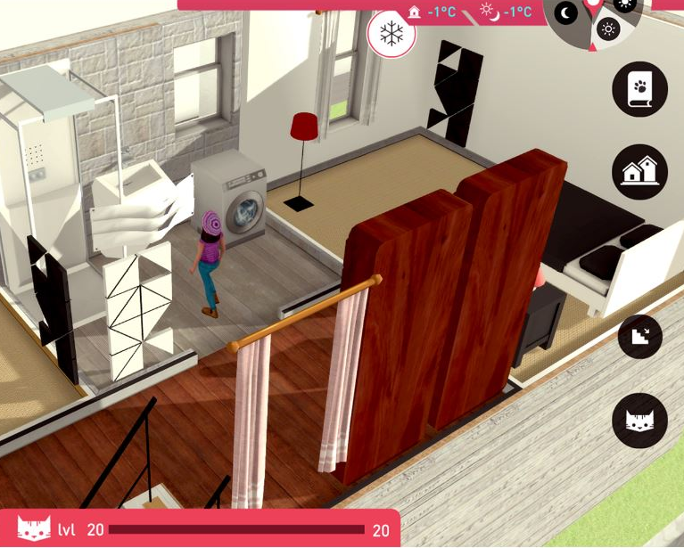

Tools Used
- Building Motivation Over Time
- Feedback
- Financial Incentives and Disincentives
- Norm Appeals
- Word of mouth
Initiated By
EDF Energy
Partners
- ADVANTICSYS
- CISTER
- DCH Group
- European Union’s HORIZON2020
- FremenCorp
- Universitat Politècnica de Catalunya
- University of Plymouth
Results
- 18 households that played the game reduced electricity by an average of 3.46% while the control group increased electricity use by 1.68%, a difference of 5.14%
Downloads
- PDF of this case study
For More Information
Energy Cat Game
The Energy Cat computer game was piloted with social housing residents in Plymouth, United Kingdom, to motivate and help them learn about affordable, energy-saving steps they could take in their homes. The game provided an average electricity saving of 3.46% and an average gas saving of 7.48%.
Background
Note: To minimize site maintenance costs, all case studies on this site are written in the past tense, even if they are ongoing as is the case with this particular program.
The main program intervention was a computer game that motivated and helped participants to learn about affordable energy-saving steps they could take in their social housing homes.
The Energy Cat game was first developed through an EnerGAware project funded in 2015 by the European Union, as part of a larger EU-wide plan named HORIZON2020. The primary proponent was EDF Energy, an integrated energy company that with operations spanning electricity generation and the sale of natural gas and electricity to homes and businesses throughout the United Kingdom. EDF Energy wanted to create a stronger relationship with its customers and to empower them to gain more control over their energy use.
EDF Energy R&D UK worked with six international partners: Universitat Politècnica de Catalunya, CISTER, University of Plymouth, ADVANTICSYS, FremenCorp and DCH Group.
Getting Informed
The decision to create a game occurred before the research phase. The research method used in the project included three steps: (1) Definition of user, building and game requirements; (2) Game development; and (3) Game validation.
1. Definition of user, building and game requirements took six months. This research stage involved the following activities.
- Literature review of previous projects, publications and reports related to the design and use of information technology (IT) in social housing
- Survey of the 2,772 social houses in Plymouth regarding socio-economic characteristics, energy consumption motivations, behaviour and perceptions, game experiences and IT literacy. 537 households completed the survey (20% response rate)
- Three focus groups with social housing tenants in Plymouth that looked at game play scenarios
- A review of Plymouth’s social housing provider database regarding building characteristics of the social housing stock in Plymouth
The focus group and survey results favored a game in which participants could manage a customizable virtual house. The focus groups favored a pseudo-realistic game rather than a fantasy / science fiction / cartoon or a fully realistic one.
2. Game Development took an additional six months. The core gameplay was then refined and validated through a 12-month iterative testing process involving social tenants in several focus groups, held in a ‘soft-lab’ replicating a home living room environment at the School of Psychology, University of Plymouth. Participants played with prototypes of the game and provided feedback on its playability and display features.
3. Game Validation is described in the “Measuring Achievements” section below.
Prioritizing Audiences
This program was designed for Social Housing residents.
Delivering the Program
The main character in the game was the Energy Cat, which was controlled by the player. Because the cat wanted to remain comfortable and energy-wise, it advised the humans. Each day, players were given missions to complete earning them energy points and money which could be used to buy new items for the home, making EnergyCat’s humans happy. While some missions happened in the main home, others took place in neighbours’ homes. These allowed for scenarios that were different from the player's house and that could model possible enhancements to the player's house. (Feedback; Financial Incentives; Overcoming Specific Barriers; Vivid, Personalized, Credible, Empowering Communication)
Players could save energy points by taking steps like upgrading electric appliances, improving the building's thermal performance, and getting the humans in the house to close windows when the home was being heated, take shorter showers, and turn lights off when a room was unoccupied. They could also find extra money rewards hidden in their homes, which encouraged them to play every day and to look for ways of saving energy in all rooms of the house. (Building Motivation, Engagement and Habits Over Time)

Participants had to carefully manage the energy use in their virtual homes. Reducing energy use too much resulted in lower comfort and productivity levels and therefore getting less money.
The game could integrate energy data from smart meters installed in each users’ home. When weekly energy use was significantly lower than the same week the previous year, the game awarded extra money. In this way, users were encouraged to apply what they learned to save energy in their own homes. (Vivid, Personalized, Credible, Empowering Communication)
Using the social media features of the game, users could easily share data on achievements and energy advice, compete, and form online energy communities. (Norm Appeals; Word of Mouth)
Recruitment
Of the 2,772 tenants who received the pre-program survey by mail, 537 completed the survey. Of these, 237 indicated a willingness to participate in the pilot. When asked a second time, the number dropped to 137, of which only 88 qualified. They each received energy monitoring systems. Of the 44 homes in the experimental group, only 18 really played the game and they were analyzed separately.
The following table summarizes the key barrier to action and how it was addressed.
|
Barrier |
How it was addressed
|
|
Lack of engagement / initiative |
· Developed a fun game intervention · A team of psychologists tried to maintain an optimal relationship with the tenants during the entire project and support them when needed. · The program sent participants Christmas cards, leaflets, letters with information on game updates and invitations to focus groups. |
Financing the Program
The Energy Cat game was first developed through an EnerGAware project funded in 2015 by the European Union, as part of a larger EU-wide plan named HORIZON2020.
The initial investment was €687,882 (about US$880,500), including costs incurred within the EnerGAware project that were directly related to game production (WP2 and WP3) The break-even point (number of downloads that mad the game viable from an economic perspective assuming that all users became regular players) was estimated to be 14,502 downloads with a lifespan of 1 year. The break-even point was much lower when a 3-year lifespan was considered, at 4877 downloads.
Measuring Achievements
This pilot used a quasi-randomized control design. The 88 social houses were assigned to the experimental or control group as follows. All homes were paired with identical/near-identical houses. Within each pair, one was randomly assigned to the experimental or control group. By default, this determined the group for the remaining house in each pair. A comparison of the main socio-economical and other characteristics in both the control and experimental groups did not indicate any significant differences. Of the 44 homes in the experimental group, only 18 really played the game and they were analyzed separately.
Electricity use was measured using an optical pulse reader and a standard wireless M-Bus pulse counter, attached to the existing electricity meters. Gas use was measured using a webcam system that converted the visual display on existing meters into an electronic signal. For homes heated by electricity, Electricity consumption was weather-corrected, based on Heating Degree Days. For home heated by gas, gas consumption was weather-corrected.
The following measures were used in the evaluation. • Pilot households’ gaming experience data, available from the game server. • Energy consumption data collected by the energy monitoring system installed in the pilot homes. • Local weather data, available from an automatic web weather service, needed to analyse the weather impact on the energy consumption profile.
A baseline survey in month 24 asked about energy consumption behaviour, energy awareness, IT literacy, and self-reported manual meter readings to cross-check automatic readings. This survey was repeated in month 27 (three months after implementation of the game). Those in the experimental group were also asked to provide feedback on the game. A final evaluation survey was sent to all pilot homes in month 35. To encourage a high response rate to the surveys, the program used a series of reminder letters, and offered prize draws and shopping vouchers as incentives. Although pre-paid postal return envelopes were always left, tenants could also respond to the surveys online.
Finally, while removing the energy monitoring systems from each house, the program collected meter readings to double-check the data collected by the energy monitoring systems. It also held face-to-face interviews with the tenants at various points in the last year, to get feedback on the game, and in month 36 it held an additional focus group with tenants in the experimental group.
Feedback
Feedback was provided through the game and utility bills.
Results
The 18 households that played the Energy Cat serious game reduced electricity saving by an average of 3.46% while the control group increased electricity use by 1.68%, a difference of 5.14%. Average gas reductions were 7.48% while the control group increased gas use by 1.68%, a difference of 9.16%. On an annualized basis, this would save about 170 kWh of electricity and 468 kWh of gas (638 kWh in all) per household. The results were found not to be statistically significant, due to the small sample sizes, but an effect size was detected (0.2).
The impact of the game was greater in the relative short-term and did not persist with the same intensity in the final stage of the evaluation.
Although it increased engagement in certain specific energy saving behaviours, the game was found to have limited impact on behaviour change, with small differences found across the experimental versus control conditions after the reporting period or over time. Nevertheless, several significant effects were found across conditions. Specifically, tenants had increased understanding of how their homes used energy over time and reported improved perceived affordability of energy bills over time. Engagement in the project was also found to be useful in educating subjects about fuel poverty.
The results suggest that behaviour change may have been restricted due to a desire to maintain comfort levels and for health reasons. This may also be attributed to the fact that social housing tenants already use less energy than average (see S. Karatasou, M. Laskari, M. Santamouris, “Determinants of high electricity use and high energy consumption for space and water heating in European social housing: socio-demographic and building characteristics” Energy Build., 170 (2018), pp. 107-114.)
Notes
This case study was written in 2021 by Jay Kassirer based on information provided in the linked reports.
Search the Case Studies